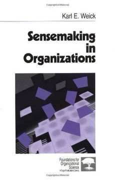
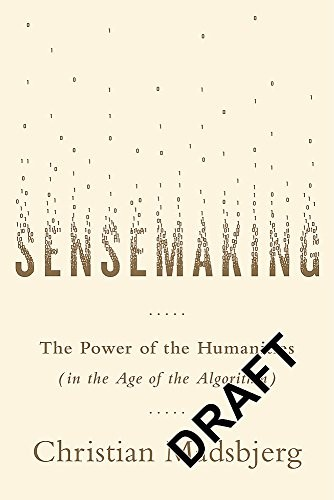
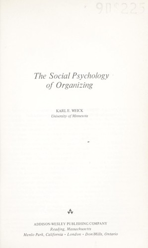
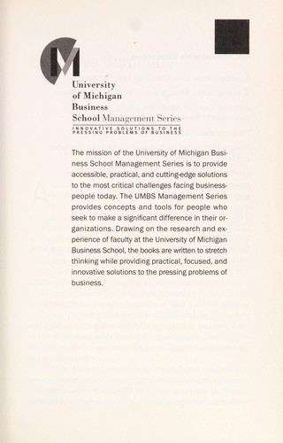

Módulo 04 / Apartado 1 de 5
Sensemaking, o entender qué está pasando
Qué es exactamente, por qué no es lo mismo que analizar, las siete propiedades de Weick, un incendio de 1949 que se llevó por delante a trece bomberos y la regla que te ahorra media vida: no se discute sobre esto.
La palabra, antes de nada
Sensemaking se traduce mal. «Dar sentido» suena a terapia y «construcción de significado» suena a tesis. Lo que quiere decir es más bruto y más útil: el trabajo de averiguar qué narices está pasando cuando todavía no está claro qué está pasando. Y hacerlo desde dentro, sin la ventaja de saber cómo acaba.
La diferencia con «analizar» no es de matiz. Analizar es lo que haces cuando ya tienes el problema delimitado: hay un objeto, tú estás fuera, lo mides. El sensemaking es lo de antes, y es el trabajo sucio: no hay objeto todavía, tú estás dentro, y lo que decidas mirar cambia lo que va a pasar.
«¿Qué está pasando aquí?» — sensemaking. No hay respuesta correcta esperando a ser encontrada; hay una versión que construyes y con la que actúas.
«¿Por qué pasa?» — análisis causal. Ya presupone que has aceptado una versión de lo que pasa. Esto es el módulo 5.
«¿Qué hago?» — decisión. Es la parte que todo el mundo cree que es el trabajo, y es la más fácil de las tres si las dos anteriores están bien hechas.
La mayoría de los desastres organizativos no son fallos de decisión. Son fallos de la primera pregunta que nadie revisó porque nadie sabía que la había contestado.
Karl Weick, que es el dueño de la palabra
El término, en el sentido en que se usa aquí, es de Karl E. Weick (1936-2025), psicólogo social estadounidense, profesor en Michigan. No es un gurú de aeropuerto: es un académico de organizaciones con dos libros que se citan sin parar y que casi nadie ha leído enteros.
Recuenco lo pone por delante de la alternativa más popular, y lo dice explícitamente: «en el aspecto laboral/organizacional yo prefiero la aproximación de Sensemaking in organizations de Karl Weick». Así que empezamos por ahí.

El libro de esto Sensemaking in OrganizationsEl libro que fija el término. Weick sostiene que las organizaciones no encuentran la realidad, la promulgan: actúan, y luego construyen la explicación de lo que hicieron. De ahí salen las siete propiedades que vienen ahora — Karl E. Weick · 1995
Las siete propiedades, que son la chicha
Weick no da un método de siete pasos. Da siete características de cómo funciona el proceso siempre, te des cuenta o no. Sirven de checklist para pillarte a ti mismo. Y son incómodas, porque cuatro de ellas dicen básicamente que lo estás haciendo peor de lo que crees.
La sexta merece una parada, porque es la que más cuesta tragar. Enactment quiere decir que el entorno del que sacas conclusiones lo has ayudado a crear tú. Bajas el precio porque crees que el mercado es sensible al precio; el mercado se vuelve sensible al precio; lo apuntas como confirmación. La empresa que decide que sus clientes solo quieren barato acaba, en un par de años, con una cartera de clientes que solo quieren barato. No lo descubrió: lo fabricó.
El modelo interno modela la realidad y no al revés.
Mann Gulch: el caso fundacional
Weick tiene un artículo de 1993 que es la pieza más citada de todo el campo: The Collapse of Sensemaking in Organizations: The Mann Gulch Disaster. Es el caso que hay que conocer, y como casi nadie lo cuenta, lo contamos entero.
5 de agosto de 1949, Mann Gulch, un barranco del bosque nacional de Helena, Montana. Un incendio provocado por un rayo. Saltan en paracaídas quince smokejumpers —bomberos paracaidistas— y se les une un guarda que ya estaba en la zona. Dieciséis hombres.
Bajan hacia el río, por la ladera, con la idea de atacar el fuego por el flanco. El fuego cruza el barranco por delante de ellos y les corta la salida. Se dan la vuelta y empiezan a subir una cuesta de hierba seca con el fuego detrás, ganando terreno.
El jefe, Wagner Dodge, hace entonces algo que nadie había visto: se para, prende fuego a la hierba delante de él, deja que arda un trozo de ladera y se tumba en la ceniza. El incendio grande pasa por los lados de ese cuadro quemado y él sobrevive.
Les grita a los demás que se metan con él. Nadie lo hace. Siguen corriendo cuesta arriba. Dos, Sallee y Rumsey, llegan a una grieta en las rocas de la cresta y pasan. Los otros trece mueren.
La lectura obvia es «pánico». La lectura de Weick es muchísimo más interesante, y es la que hace que este caso esté en un curso de resolución de problemas.
Ese último punto es el que más se cita. Soltar las herramientas —los pulaskis, las palas, la mochila— habría cambiado el resultado; a la carrera se ganan metros. No las soltaron, y la explicación de Weick no es que fueran tontos: un bombero sin herramientas no es un bombero. Soltar la herramienta es soltar la identidad, que es la propiedad número uno de la lista de arriba. Preferían morir de bomberos.
Frente a eso, Weick propone cuatro fuentes de resiliencia para que un grupo no se desintegre cuando el sentido se cae. Son cuatro y son concretas:
Capacidad de montar algo con lo que hay a mano cuando el procedimiento no aplica. Dodge la tenía; el grupo, no. No se enseña en el manual precisamente porque el manual es lo que ha dejado de servir.
Que cada uno lleve dentro un mapa del equipo entero, no solo de su puesto. Si el equipo se dispersa, cada individuo puede seguir actuando como si el equipo existiera, porque lo tiene en la cabeza.
Actuar con confianza y dudar a la vez. Weick lo formula así: el sabio no es el que sabe mucho, es el que desconfía de lo que sabe sin quedarse paralizado. Ni arrogancia ni cautela: las dos cosas al mismo tiempo.
Que la gente diga en voz alta lo que ve y que se le crea. Es lo único de los cuatro que se puede instalar antes de que pase nada, y es lo que en el módulo 6 se llama seguridad psicológica.
La otra escuela: Madsbjerg y las humanidades
El otro libro que Recuenco usa como hilo conductor es de un danés, Christian Madsbjerg, fundador de ReD Associates, una consultora que contrata antropólogos, sociólogos, historiadores del arte y filósofos en lugar de MBAs. Su tesis es más beligerante que la de Weick y va contra la idea de que los datos bastan.

El libro de esto Sensemaking: The Power of the Humanities in the Age of the AlgorithmArgumenta que la devoción ciega a los números tapa agujeros enormes, y que los grandes aciertos recientes no vienen del pensamiento cuantitativo sino de entender a fondo cultura, lenguaje e historia. Perfila a los connoisseurs: gente con una capacidad rara de leer situaciones complejas —pone a George Soros y al arquitecto Bjarke Ingels como ejemplos — Christian Madsbjerg · 2017
La palabra que hay que retener es connoisseur. No es «experto» ni «analista». Es alguien que ha visto tantas situaciones parecidas y tan distintas que lee el contexto completo antes de tener datos. Un catador. Y la mala noticia de Madsbjerg es que eso no se certifica ni se compra: se acumula.
Weick y Madsbjerg no se pelean, se reparten el trabajo. Weick explica cómo falla el sensemaking en un grupo bajo presión. Madsbjerg explica por qué la mayoría de las empresas ni siquiera lo intentan: porque han sustituido el juicio por el dashboard. Que es, si te fijas, la falacia de McNamara del módulo anterior con otro traje.
La regla número uno: no se discute sobre sensemaking
Y aquí llega la parte práctica, que es la que Recuenco dedica una turra entera a machacar, y es la que te ahorra dinero y salud.
El sensemaking es subjetivo y va pegado a la identidad —propiedad número uno de Weick—. Cuando le demuestras a alguien algo que contradice cómo se ve a sí mismo, no estás corrigiendo un dato: le estás diciendo que no es quien cree que es. Y ahí la persona no razona. Se defiende.
Discrepancia normal: el otro discute los datos, pregunta de dónde salen, propone otra interpretación de los mismos hechos. Esto se puede trabajar y suele ser un problema de semántica o de malentendido.
Muro de sensemaking: el otro no ataca tu evidencia, ataca tu legitimidad para traerla. Cambia de tema, se ofende, cuestiona el encargo, pide que la «cosmovisión de la casa» entre como restricción del problema. Traducido: quiero una solución donde la gravedad no exista.
Recuenco cuenta reuniones cerradas en cinco minutos, con argumentarios enormes preparados y tirados a la basura sobre la marcha. Su regla: no pongas buen tiempo detrás de tiempo malo, igual que no pones buen dinero detrás de dinero malo.
Esto no significa que tú tengas razón. Significa que la discusión no es el instrumento. Puedes convivir perfectamente con la opinión contraria; lo que no puedes es convertir una diferencia de sensemaking en un debate, porque negar el relato de alguien es negar a la persona, y la persona lo sabe antes que tú.
Comprender esto y la espiral del pa qué es fundamental para preservar uno de los bienes más imprescindibles, el tiempo, y uno de los órganos más preciados, el hígado.
Nota al margen, y es reciente. Aquí la espiral del «pa qué» aparece como remate de otra cosa. El 5 de septiembre de 2026 le dedicó un hilo entero para volver de vacaciones, y ahí la desarrolla entera: la contrapone a la espiral del silencio de Noelle-Neumann y la apoya en Nguyen, Berne y Storr. Está contada en el módulo 3, que es donde vive la otra espiral.
Y una advertencia sobre el propio sensemaking
Recuenco cierra la saga con una imagen química que vale la pena copiar. El fósforo no existe libre en la naturaleza: es tan reactivo que en cuanto toca oxígeno se combina. Solo lo encuentras dentro de compuestos.
Con el sensemaking pasa igual. No lo vas a ver nunca en estado puro. Lo vas a ver metido dentro de un problema de marketing, de un conflicto de socios, de un rediseño de producto. Buscar «el proceso de sensemaking» como si fuera una fase con su entregable es el error de principiante. Es una manera de mirar, no una casilla del diagrama de Gantt.
Ejercicio, y es el único de este apartado. Coge la última reunión que se te atascó. Escribe en una línea qué crees tú que está pasando y en otra línea qué cree el que te llevaba la contraria. Si las dos líneas son compatibles con los mismos hechos, tenías un problema de análisis. Si no lo son, tenías un muro y estuviste media hora tirando argumentos contra él.
Fuentes de este apartado
Las turras de las que sale
La central del apartado. Empieza con Madsbjerg, se pasa a Weick a mitad —dice preferirlo para lo organizativo— y termina en la parte dura: el muro del sensemaking, los argumentarios tirados a la basura y por qué discutir de esto es tirar el tiempo. De aquí sale el enlace al paper de Mann Gulch.
Cierre de la saga de sensemaking: por qué nunca lo verás puroTurra · 42 tweets · jun 2024El cierre del arco, con la metáfora del fósforo que no existe en estado nativo. Se va por la tangente a la neuroestética y a un libro sobre neurodivergencia y arte, pero la tesis que importa está al principio y al final: el sensemaking se estudia en sus aplicaciones e hibridaciones, no en abstracto.
Rabbit holes y pensamiento liminal inducidoTurra · 45 tweets · jun 2024Tercera pata de la saga, y la que da de comer al apartado siguiente. Aquí solo importa el remate: quien hace sensemaking y no es bueno, normalmente es porque le falta calle y le faltan agujeros de conejo por los que haberse tirado.
Los libros
El libro de referencia y el que Recuenco prefiere para lo organizativo. Denso, académico y con las siete propiedades desarrolladas una a una. Si solo vas a leer una cosa de Weick, mejor el paper de Mann Gulch, que es gratis y son treinta páginas.

The Social Psychology of OrganizingKarl E. Weick · 1969, 2ª ed. 1979El anterior, y donde aparece por primera vez la idea de enactment: las organizaciones no se encuentran un entorno, lo promulgan. Es el origen de todo lo demás y se lee peor que el de 1995, pero es el que explica de dónde viene la propiedad número seis.
Sensemaking: The Power of the Humanities in the Age of the AlgorithmChristian Madsbjerg · 2017La versión legible y beligerante. Cinco principios, casos de empresa y el concepto de connoisseur. Recuenco dice que fue un input muy valioso en su postura de defensa de la inteligencia humana frente a la tiranía del dato. Se lee en un fin de semana.

Managing the UnexpectedKarl E. Weick y Kathleen M. Sutcliffe · 2001El Weick aplicado, y el que da de comer al apartado 3 de este módulo. Aquí lo dejamos anotado porque es la continuación natural: si Mann Gulch enseña cómo se cae el sentido, este enseña qué hacen las organizaciones que no se lo pueden permitir.